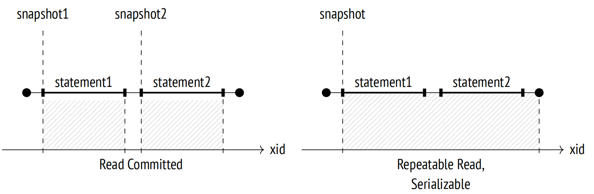
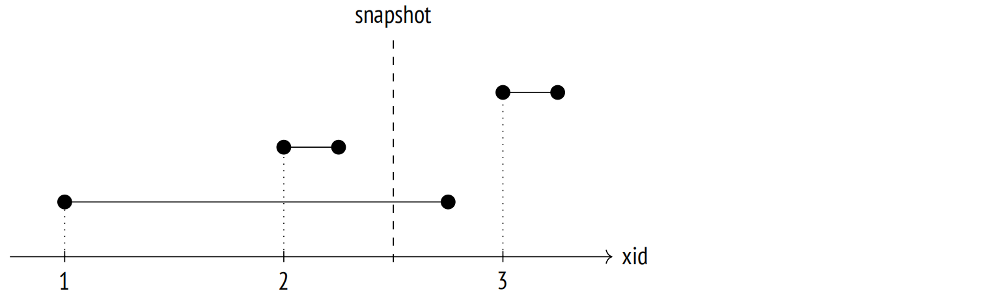
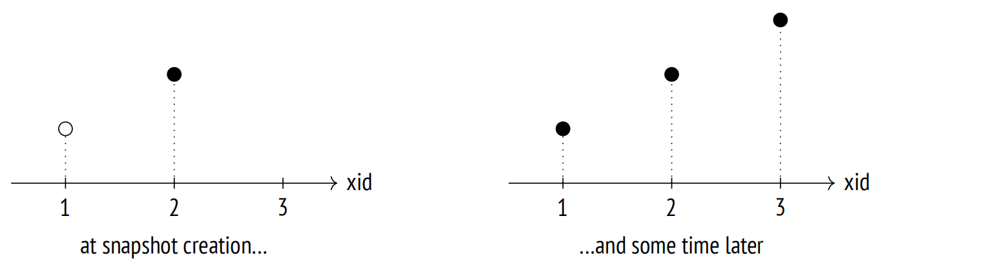
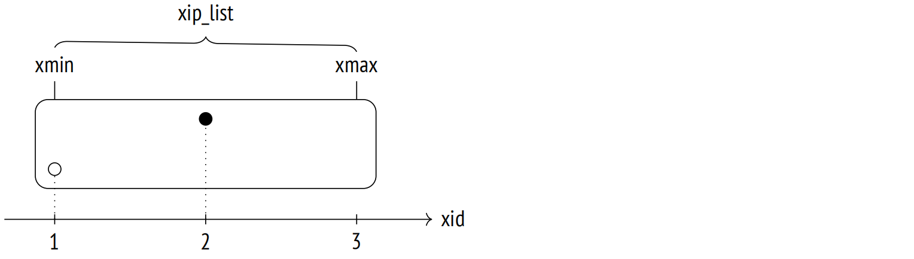

第 4 章：快照
4.1 什么是快照？
数据页可以包含同一行的多个版本，尽管每个事务最多只能看到其中一个版本。所有不同行的可见版本共同构成一个快照。快照仅包括在获取时已提交的当前数据，因此为这一特定时刻提供了一致的 (在 ACID 意义上) 数据视图。
为了确保隔离性，每个事务都使用其自己的快照。这意味着不同的事务可以看到在不同时间点获取的不同快照，但这些快照仍然是一致的。
在读已提交隔离级别下，每个语句开始时获取一个快照，并且仅在该语句期间内保持活跃状态。
在可重复读和可序列化隔离级别下，在事务内的第一条语句开始时获取一个快照，并且会保持活跃状态直到整个事务完成。

4.2 行版本可见性
快照并不是所有所需元组的物理拷贝。相反，它由几个数字定义，而元组的可见性则由特定规则决定。
元组可见性由元组头中的 xmin 和 xmax 字段 (即执行插入和删除的事务 ID) 和相应的提示位定义。由于 xmin–xmax 区间不相交，因此在任何快照中，每一行仅由其版本中的一个所表示。
确切的可见性规则十分复杂 1，因为考虑到了各种不同的场景和极端情况。非常粗略地，我们可以这样描述它们：一个元组在包括 xmin 事务更改但不包括 xmax 事务更改的快照中是可见的 (换句话说，该元组已经出现并且尚未被删除)。
如果事务在快照创建之前提交，那么事务更改在快照中是可见的。作为一个例外，事务可以看到自己未提交的更改。如果事务被中止，其更改不会在任何快照中可见。
让我们看一个简单的例子。在此图中，线段代表事务 (从它们的开始时间到提交时间)：

此处，应用于事务的可见性规则如下：
- 事务 2 在快照创建之前已提交，因此其更改是可见的。
- 事务 1 在快照创建时仍处于活跃状态，因此其更改不可见。
- 事务 3 是在快照创建后启动的，因此它的更改也不可见 (无论此事务完成与否都没有区别)。
4.3 快照结构
不幸的是，前面的示例与 PostgreSQL 实际看到的情况并不相符 2。问题在于，系统不知道事务何时提交。仅知道它们是何时开始的 (这一时刻由事务 ID 定义)，事务何时完成的未在任何地方记录。
如果启用了 track_commit_timestamp 参数，可以跟踪事务的提交时间 3，但它们不会以任何方式参与可见性检查 (尽管出于其他目的跟踪它们仍然是有用的，例如，应用于外部复制解决方案)。
此外，PostgreSQL 总是在相应的 WAL 条目中记录提交和回滚的时间，但这些信息仅用于时间点恢复。
我们只能了解到事务的当前状态。此信息可以在服务器的共享内存中获取：ProcArray 结构包含所有活跃会话及其事务的列表。一旦事务完成，就无法确定它在快照创建时是否处于活跃状态。
因此创建快照仅记录获取的时刻是不够的：还需要收集在那一时刻所有事务的状态。否则，之后将无法确定哪些元组在快照中必须可见，哪些必须被排除。
让我们看一下系统在获取快照时以及一段时间后可用的信息，白色圆圈表示活跃事务，黑色圆圈表示已完成的事务：

假设我们不知道在获取快照时第一个事务仍在执行中，而第三个事务尚未开始。那么看起来它们就像第二个事务 (在那个时刻已提交) 一样，无法将它们过滤掉。
因此，即使所有需要的元组都存在于堆页面中，PostgreSQL 也无法创建一个快照来显示过去某个任意时间点的数据一致状态。所以，PostgreSQL 无法实现回溯查询 (有时也称为时间或闪回查询)。
有趣的是，该功能被宣布为 Postgres 的目标之一，并在初期就实现了，但是当项目支持转交给社区时，它被从数据库系统中移除了 4。
因此，快照由创建时保存的几个值所组成 5：
xmin 是快照的下边界，由最老的活跃事务 ID 表示。
所有 ID 更小的事务要么已提交 (因此它们的更改包含在快照中)，要么已中止 (因此它们的更改会被忽略)。
xmax 是快照的上边界，由最新已提交的事务 ID 加 1 所表示。上边界定义了获取快照的时刻。
所有 ID 大于或等于 xmax 的事务要么仍在运行中，要么不存在，因此它们的更改不可见。
xip_list 是除了虚拟事务之外的所有活跃事务 ID 的列表，虚拟事务不会以任何方式影响可见性。
快照还包括其他几个参数，但此处我们将忽略它们。
以图形表示，快照可以表示为一个矩形，包括从 xmin 到 xmax 的事务。

为了理解快照是如何定义可见性规则的，我们将在 accounts 表上复现上述场景。
=> TRUNCATE TABLE accounts;第一个事务向表中插入第一行，并保持开启状态：
=> BEGIN;
=> INSERT INTO accounts VALUES (1, 'alice', 1000.00);
=> SELECT pg_current_xact_id();
pg_current_xact_id
−−−−−−−−−−−−−−−−−−−−
790
(1 row)第二个事务插入第二行，并立即提交此更改：
=> BEGIN; => INSERT INTO accounts VALUES (2, 'bob', 100.00); => SELECT pg_current_xact_id(); pg_current_xact_id −−−−−−−−−−−−−−−−−−−− 791 (1 row) => COMMIT;
此时，让我们在另一个会话中创建一个新的快照。 为此，我们可以简单地运行任何查询，但我们将使用一个特殊函数来立即查看此快照：
=> BEGIN ISOLATION LEVEL REPEATABLE READ; => -- txid_current_snapshot() before v.13 SELECT pg_current_snapshot(); pg_current_snapshot −−−−−−−−−−−−−−−−−−−−− 790:792:790 (1 row)
此函数显示了快照的组成，以冒号分隔：xmin、xmax 和 xip_list (活跃事务列表；在这个特定案例中，它由单个条目组成)。
一旦获取了快照之后，提交第一个事务：
=> COMMIT;第三个事务是在快照创建后开始的。它修改了第二行，所以出现了一个新的元组：
=> BEGIN; => UPDATE accounts SET amount = amount + 100 WHERE id = 2; => SELECT pg_current_xact_id(); pg_current_xact_id −−−−−−−−−−−−−−−−−−−− 792 (1 row) => COMMIT;
我们的快照只看到一个元组：
=> SELECT ctid, * FROM accounts; ctid | id | client | amount −−−−−−−+−−−−+−−−−−−−−+−−−−−−−− (0,2) | 2 | bob | 100.00 (1 row)
但是表中包含了三个元组：
=> SELECT * FROM heap_page('accounts',0); ctid | state | xmin | xmax −−−−−−−+−−−−−−−−+−−−−−−−+−−−−−−− (0,1) | normal | 790 c | 0 a (0,2) | normal | 791 c | 792 c (0,3) | normal | 792 c | 0 a (3 rows)
那么 PostgreSQL 是如何选择要显示哪些版本的呢？ 根据上述规则，仅当满足以下条件的已提交事务执行的更改，才会被包含在快照中：
- 如果 xid < xmin，那么更改会无条件显示 (就像创建 accounts 表的事务一样)。
- 如果 xmin ⩽ xid < xmax，那么仅当相应的事务 ID 不在 xip_list 中时，更改才会被显示。
第一行 (0,1) 是不可见的，因为插入它的事务出现在了 xip_list 中 (即使该事务落在了快照范围内)。
第二行 (0,3) 的最新版本是不可见的，因为相应的事务 ID 超过了快照的上边界。
但是第二行的第一个版本 (0,2) 是可见的：插入行的事务落在了快照范围内，并且没有出现在 xip_list 中 (插入是可见的)，而删除行的事务，其 ID 超过了快照的上边界 (删除是不可见的)。
=> COMMIT;
4.4 事务自身更改的可见性
在定义事务自身更改的可见性规则时，事情变得更加复杂：在某些情况下，只有部分更改必须是可见的。例如，无论隔离级别如何，在特定时间点打开的游标不能看到之后发生的任何更改。
为了解决这类情况，元组头提供了一个特殊字段 (cmin 和 cmax 伪列)，用于显示事务内操作的序号。cmin 列用于标识插入，而 cmax 用于删除操作。为了节省空间，这些值存储在元组头的单个字段中，而不是存储在两个不同的字段中。考虑到同一行几乎永远不会在单个事务中既被插入又被删除。(如果确实发生了，PostgreSQL 会在这个字段中写入一个特殊的 combo 标识符，在这种情况下，实际的 cmin 和 cmax 值由后端进程存储 6)。
作为示例，让我们启动一个事务并在表中插入一行：
=> BEGIN;
=> INSERT INTO accounts VALUES (3, 'charlie', 100.00);
=> SELECT pg_current_xact_id();
pg_current_xact_id
−−−−−−−−−−−−−−−−−−−−
793
(1 row)然后打开一个游标，用于执行返回表中行数的查询：
=> DECLARE c CURSOR FOR SELECT count(*) FROM accounts;再插入一行：
=> INSERT INTO accounts VALUES (4, 'charlie', 200.00);现在用另一列来扩展输出，以显示插入行的 cmin 值 (对于其他行没有意义)：
=> SELECT xmin, CASE WHEN xmin = 793 THEN cmin END cmin, *
FROM accounts;
xmin | cmin | id | client | amount
−−−−−−+−−−−−−+−−−−+−−−−−−−−−+−−−−−−−−−
790 | | 1 | alice | 1000.00
792 | | 2 | bob | 200.00
793 | 0 | 3 | charlie | 100.00
793 | 1 | 4 | charlie | 200.00
(4 rows)游标查询只获取到三行；在游标已经打开时插入的行未包含在快照中，因为它不满足 cmin < 1 的条件：
=> FETCH c;
count
−−−−−−−
3
(1 row)当然，这个 cmin 数字也存储在快照中，但无法使用任何 SQL 手段显示它。
4.5 事务视界
如前文所述，快照的下边界由 xmin 表示，xmin 是快照创建时处于活跃状态的最老的事务 ID。这个值非常重要，因为它定义了使用这个快照的事务视界。
如果一个事务没有活跃的快照 (例如，在读已提交隔离级别的语句执行之间)，那么其视界由它自己的 ID 定义(如果已分配)。
所有超出视界的事务 (那些 xid < xmin 的事务) 都保证已提交。这意味着，一个事务只能看到其视界之外的当前行版本。
如你所料，这个术语的灵感来自物理学中的事件视界概念。
PostgreSQL 跟踪所有进程的当前视界；事务可以在 pg_stat_activity 表中看到它们自己的视界：
=> BEGIN;
=> SELECT backend_xmin FROM pg_stat_activity
WHERE pid = pg_backend_pid();
backend_xmin
−−−−−−−−−−−−−−
793
(1 row)虚拟事务没有真正的 ID，但它们仍然像常规事务一样使用快照，因此它们有自己的视界。唯一例外是没有活跃快照的虚拟事务：视界的概念对于它们来说毫无意义，当涉及到快照和可见性时，它们对系统是完全"透明的" (尽管 pg_stat_activity.backend_xmin 中仍可能包含旧快照的 xmin)。
我们也可以用类似的方式去定义数据库视界。为此，我们应当获取这个数据库中所有事务的视界，并选择最远的一个，其 xmin 最老 7。在这个视界之外，过期的堆元组将永远不会对这个数据库中的任何事务可见。这样的元组便可以被 vacuum 安全地清理掉 — 这正是从实际角度来看，为什么视界的概念如此重要的原因。

让我们总结一下：
- 如果处于可重复读或可序列化隔离级别下的事务 (无论是真实的还是虚拟的) 运行了很长时间，它会保持数据库视界并推迟清理。
- 处于读已提交隔离级别下的真实事务以相同的方式保持数据库视界，即使它没有执行任何操作符 (处于 “idle in transaction” 状态)。
- 处于读已提交隔离级别下的虚拟事务仅在执行操作符时才保持视界。
整个数据库只有一个视界，因此如果它被一个事务持有，那么这个视界内的任何数据都无法进行清理 — 即使这个事务没有访问这些数据。
集簇范围的系统目录表有一个单独的视界，该视界考虑了所有数据库中的所有事务。相反，临时表不需要关注除当前进程正在执行的事务之外的任何事务。
让我们回到当前的实验。第一个会话的活跃事务仍然持有数据库视界；我们可以通过增加事务计数器来看到这一点：
=> SELECT pg_current_xact_id(); pg_current_xact_id −−−−−−−−−−−−−−−−−−−− 794 (1 row)
=> SELECT backend_xmin FROM pg_stat_activity
WHERE pid = pg_backend_pid();
backend_xmin
−−−−−−−−−−−−−−
793
(1 row)只有当这个事务完成时，视界才会向前推动，过期的元组才能被清理掉：
=> COMMIT;
=> SELECT backend_xmin FROM pg_stat_activity
WHERE pid = pg_backend_pid();
backend_xmin
−−−−−−−−−−−−−−
795
(1 row)在理想情况下，你应该避免将长事务与频繁更新 (产生新的行版本) 相结合，因为这会导致表和索引膨胀。
4.6 系统目录快照
尽管系统目录由常规表组成，但它们不能通过事务或操作符使用的快照来访问。快照必须足够"新鲜"以包含所有最新的更改，否则事务可能会看到过时的列定义或错过新添加的完整性约束。
此处是一个简单的例子：
=> BEGIN TRANSACTION ISOLATION LEVEL REPEATABLE READ;
=> SELECT 1; -- a snapshot for the transaction is taken=> ALTER TABLE accounts ALTER amount SET NOT NULL;
=> INSERT INTO accounts(client, amount)
VALUES ('alice', NULL);
ERROR: null value in column "amount" of relation "accounts"
violates not−null constraint
DETAIL: Failing row contains (1, alice, null).
=> ROLLBACK;快照创建之后出现的完整性约束对 INSERT 命令是可见的。看起来这种行为打破了隔离性，但是如果插入的事务在 ALTER TABLE 命令之前就访问了 accounts 表，那么后者就会被阻塞，直至该事务完成。
通常，服务器的行为就像为每个系统目录查询创建了一个单独的快照。但是实现当然要复杂得多 8，因为频繁创建快照会对性能产生负面影响；此外，许多系统目录对象都被缓存了，这也是必须考虑的。
4.7 导出快照
在某些情况下，必须确保并发事务无论如何都能看到同一个快照。例如，如果 pg_dump 工具以并行模式运行，所有的进程必须看到相同的数据库状态，以产生一致的备份。
我们不能仅仅因为事务是"同时"启动的，就假设快照也是相同的。为了确保所有事务看到相同的数据，我们必须使用快照导出机制。
pg_export_snapshot 函数返回一个快照 ID，这个 ID 可以传递给另一个事务 (在数据库系统之外)：
=> BEGIN ISOLATION LEVEL REPEATABLE READ;
=> SELECT count(*) FROM accounts;
count
−−−−−−−
4
(1 row)
=> SELECT pg_export_snapshot();
pg_export_snapshot
−−−−−−−−−−−−−−−−−−−−−
00000004−0000006E−1
(1 row)在执行第一个语句之前，另一个事务可以通过运行 SET TRANSACTION SNAPSHOT 命令来导入快照。隔离级别必须设置为可重复读或可序列化，因为在读已提交级别下，操作符使用它们自己的快照：
=> DELETE FROM accounts; => BEGIN ISOLATION LEVEL REPEATABLE READ; => SET TRANSACTION SNAPSHOT '00000004-0000006E-1';
现在第二个事务将使用第一个事务的快照，因此，它将看到四行 (而不是零)：
=> SELECT count(*) FROM accounts; count −−−−−−− 4 (1 row)
显然，在快照导出后，第二个事务不会看到第一个事务所做的任何更改 (反之亦然)：常规的可见性规则仍然适用。
导出快照的生命周期与导出事务的生命周期相同。
=> COMMIT;
=> COMMIT;-
backend/access/heap/heapam_visibility.c ↩︎
-
include/utils/snapshot.h
backend/utils/time/snapmgr.c ↩︎ -
backend/access/transam/commit_ts.c ↩︎
-
Joseph M. Hellerstein, Looking Back at Postgres. https://arxiv.org/pdf/1901.01973.pdf ↩︎
-
backend/storage/ipc/procarray.c, GetSnapshotData function ↩︎
-
backend/utils/time/combocid.c ↩︎
-
backend/storage/ipc/procarray.c, ComputeXidHorizons function ↩︎
-
backend/utils/time/snapmgr.c, GetCatalogSnapshot function ↩︎